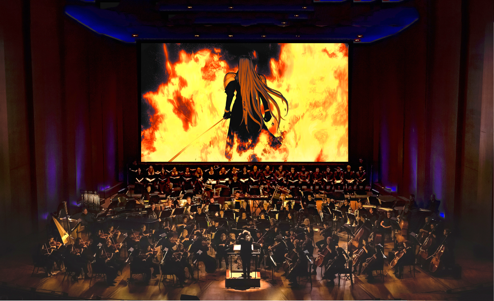

Music
Home
Story
Music
Legacy
Contact
Final Fantasy VII is a role-playing video game developed by Square (now Square Enix) and published by Sony Computer Entertainment as the seventh installment in the Final Fantasy series. Released in 1997, the game sparked the release of a collection of media centered on the game entitled the Compilation of Final Fantasy VII. The music of the Final Fantasy VII series includes not only the soundtrack to the original game and its associated albums, but also the soundtracks and music albums released for the other titles in the collection. The first album produced was Final Fantasy VII Original Soundtrack, a compilation of all the music in the game. It was released as a soundtrack album on four CDs by DigiCube in 1997. A selection of tracks from the album was released in the single-disc Reunion Tracks by DigiCube the same year. Piano Collections Final Fantasy VII, an album featuring piano arrangements of pieces from the soundtrack, was released in 2003 by DigiCube, and Square Enix began reprinting all three albums in 2004. To date, these are the only released albums based on the original game's soundtrack, and were solely composed by regular series composer Nobuo Uematsu; his role for the majority of subsequent albums has been filled by Masashi Hamauzu and Takeharu Ishimoto. The Compilation of Final Fantasy VII began eight years after the release of Final Fantasy VII with the release of the animated film sequel Advent Children in 2005. The soundtracks for each of the titles in the collection are included in an album, starting with the album release of the soundtrack to Advent Children that year. The following year, Nippon Crown released a soundtrack album to correspond with the video game Dirge of Cerberus, while Square Enix launched a download-only collection of music from the multiplayer mode of the game, which was only released in Japan. After the launch of the game Crisis Core in 2007, Warner Music Japan produced the title's soundtrack. The latest album in the collection, Before Crisis: Final Fantasy VII Last Order: Final Fantasy VII Original Soundtrack, was released by Square Enix the same year as a combined soundtrack album for the game Before Crisis and the animated movie Last Order. The original music received highly positive reviews from ritics, who found many of the tunes to be memorable and noted the emotional intensity of several of the tracks. The reception for the other albums has been mixed, with reactions ranging from enthusiastic praise to disappointment. Several pieces from the soundtrack, particularly "One-Winged Angel" and "Aeris' Theme", remain popular and have been performed numerous times in orchestral concert series such as Dear Friends: Music from Final Fantasy and Tour de Japon: Music from Final Fantasy. Music from the Original Soundtrack has been included in arranged albums and compilations by Square as well as outside groups. Creation and development: Final Fantasy VII was scored by the series' main composer Nobuo Uematsu. Nobuo Uematsu composed the music of Final Fantasy VII in less than one year, matching the game's development time, although he had taken two years to create the soundtrack for the previous title, Final Fantasy VI. Final Fantasy VII was the first game in the series to be developed for the PlayStation, and while the media capabilities of the console allowed for pre-recorded Linear PCM (often as Red Book audio tracks on the CD), it was decided to generate the music in real time on the console instead, using samples and note data. This decision has been credited as giving the soundtrack "a very distinctive mood and feel", forming a strong association for listeners between the game and its soundtrack. Uematsu had initially planned to use vocal performances for the game to take advantage of the console's capabilities, but found that the advanced audio quality required in turn made the game have much longer loading times in each area. Uematsu decided that the quality was not worth the effects on gameplay, though after the release and seeing Suikoden II (1998, PlayStation), which had used higher-quality music instead, he reversed his stance for Final Fantasy VIII. There was a plan to use a "famous vocalist" for the ending theme to the game as a "theme song" for the game, but time constraints and thematic concerns, caused the idea to be dropped. Uematsu has stated, however, that the move into the "PlayStation era", which allowed video game composers to use sounds recorded in the studio rather than from synthesizers, had "definitely been the biggest change" to video game music. Uematsu's approach to composing the game's music was to treat it like a film soundtrack and compose songs that reflected the mood of the scenes rather than trying to make strong melodies to "define the game", as he felt that approach would come across too strong when placed alongside the game's new 3D visuals. As an example, he composed the track intended for the scene in the game where Aerith Gainsborough is killed to be "sad but beautiful", rather than more overtly emotional, creating what he feels is a more understated feeling. Uematsu has additionally said that the soundtrack has a feel of "realism", which also prevented him from using "exorbitant, crazy music". The first piece that Uematsu composed for the game was the opening theme; game director Yoshinori Kitase showed him the opening cinematic to the game and asked him to begin the project there. The track was well received in the company, which gave Uematsu "a sense that it was going to be a really good project". He later stated in the liner notes for the soundtrack album that the music for Final Fantasy VII was his "greatest harvest" to date. Final Fantasy VII was the first game in the series to include a track with digitized vocals, "One-Winged Angel". The track has been called Uematsu's "most recognizable contribution" to the music of the Final Fantasy series. Though the composer did not expect it to gain such popularity. The piece, described as "a fanfare to impending doom", is said to not "follow any normal genre rules" and has been termed "possibly the most innovative idea in the series' musical history". Uematsu approached the piece, which accompanies the final battle of the game, in a different manner than previous "boss tracks": as he felt that using his normal approach would cause unfavorable comparisons to his well-received Final Fantasy VI boss tracks, he instead tried to take a different approach. Inspired by The Rite of Spring by Igor Stravinsky to make a more "classical" track, and by rock and roll music from the late 1960s and early 1970s to make an orchestral track with a "destructive impact", he spent two weeks composing short unconnected musical phrases, and then arranged them together into a song, an approach he has never used before or since. The lyrics of "One-Winged Angel", a Latin choral track that plays at the climax of the game, were taken from the medieval poetry that forms the basis of Carl Orff's Carmina Burana, specifically "Estuans Interius", "O Fortuna", "Veni, Veni, Venias" and "Ave Formosissima". Uematsu has stated that the intro of "One-Winged Angel" is based on Jimi Hendrix's "Purple Haze", that the piece revolves around the image of Sephiroth, and that despite the chorus and orchestra, he still thinks of it as a "rock piece". He said in a 2005 interview that "One-Winged Angel" is his favorite tune from the soundtrack, and in 2004 that it was his favorite battle theme from any Final Fantasy game.
,